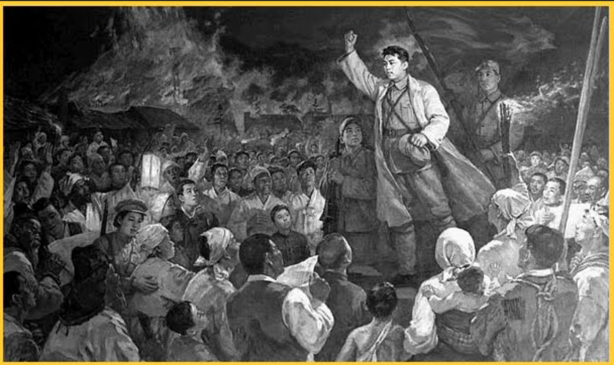
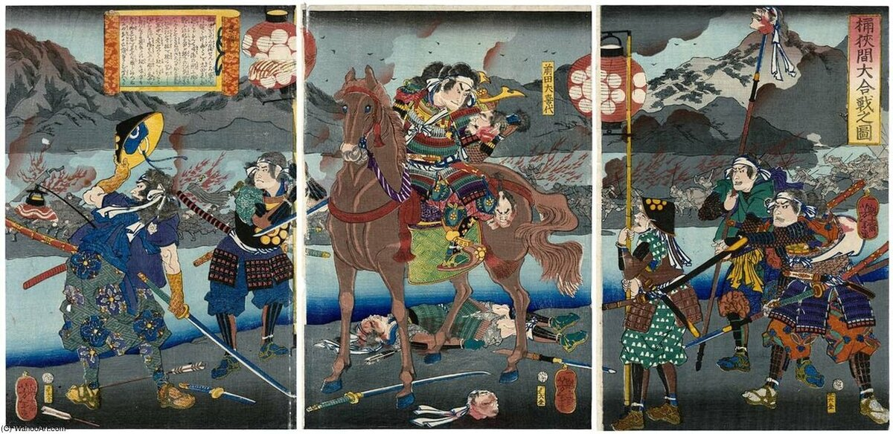

.jpeg)
Bem-vindo ao Período Sengoku
Explore um dos períodos mais fascinantes do Japão.
O Período Sengoku (cerca de 1467-1603) foi uma das épocas mais turbulentas e fascinantes da história do Japão. Conhecido como o "Período dos Estados Combatentes", esta era foi marcada por guerras civis, caos político e fragmentação do poder central. O país, que antes era governado por um shogunato centralizado, viu-se dividido em vários domínios independentes, cada um liderado por um senhor da guerra, ou daimyo, que lutava pelo controle e pela supremacia. Este período de quase 150 anos foi essencial para moldar o Japão moderno, tanto em termos de estrutura política quanto de cultura e sociedade. As constantes batalhas entre clãs, as traições e as alianças estratégicas criaram um cenário de conflito, mas também de inovação e transformação. Entre as figuras mais proeminentes desta era, estão Oda Nobunaga, Toyotomi Hideyoshi e Tokugawa Ieyasu, cujas ambições e realizações acabaram por restaurar a ordem e unificar o Japão, pavimentando o caminho para o período de paz que se seguiu sob o Shogunato Tokugawa. Neste contexto, o Período Sengoku não é apenas um tempo de guerra, mas também um período de profundas mudanças sociais e econômicas, onde as sementes do Japão moderno começaram a ser plantadas.
Linha do Tempo
Conheça a cronologia e os principais eventos do Período Sengoku:
- 1467-1477: Início da Guerra Ōnin, marcando o começo da Era Sengoku.
- A Guerra Onin (1467-1477) foi um conflito civil significativo no Japão, marcando o início do período Sengoku, uma época caracterizada por grande agitação social e conflitos militares. A guerra envolveu principalmente o shogunato Ashikaga e vários senhores feudais, resultando em destruição generalizada em Quioto e na desintegração do poder centralizado. O conflito surgiu de disputas sobre a sucessão shogunal e controle territorial, com clãs poderosos como os Hosokawa e os Yamana disputando influência. Não houve um vencedor claro, mas a guerra preparou o terreno para a fragmentação do poder e o surgimento de senhores de guerra regionais, levando às tentativas de unificação de figuras como Oda Nobunaga e Toyotomi Hideyoshi no final do século XVI.
- 1560: Batalha de Okehazama.
- A Batalha de Okehazama, ocorrida em 1560, foi um confronto decisivo durante o período Sengoku do Japão. Nela, Oda Nobunaga, um jovem e ambicioso senhor da guerra, enfrentou o poderoso clã Imagawa, liderado por Imagawa Yoshimoto. Na época, Nobunaga era considerado um dos senhores feudais menos poderosos, enquanto o clã Imagawa estava em ascensão e contava com um exército numeroso. Yoshimoto marchou em direção a Quioto, buscando expandir seu domínio Nobunaga, ciente da desvantagem numérica, planejou uma emboscada. Ele aproveitou a chuva e a confusão gerada no campo para surpreender as tropas de Imagawa, que estavam despreparadas. A estratégia de Nobunaga foi audaciosa, envolvendo uma rápida movimentação e um ataque direto ao acampamento inimigo. A batalha resultou em uma vitória inesperada para Nobunaga, que conseguiu matar Yoshimoto e desestabilizar o clã Imagawa. Este feito consolidou a reputação de Nobunaga como um líder militar astuto e marcou um ponto de virada em sua trajetória, permitindo-lhe expandir ainda mais seu poder nas décadas seguintes.
- 1575-1582 Batalha de Nagashino.
- A Batalha de Nagashino, ocorrida em 28 de junho de 1575, foi um dos confrontos mais decisivos do período Sengoku no Japão. Nesta batalha, as forças de Oda Nobunaga e Tokugawa Ieyasu enfrentaram o clã Takeda, liderado por Takeda Katsuyori. O clã Takeda era conhecido por suas táticas de cavalaria rápida e poderosa, e Katsuyori queria recuperar o prestígio do clã após a morte de seu pai, Takeda Shingen. Nobunaga, já um senhor de guerra proeminente, buscava consolidar seu poder e viu a oportunidade de derrotar um rival forte. Nobunaga preparou sua defesa em Nagashino, utilizando fortificações e uma nova estratégia militar. Ele posicionou uma série de arqueiros em um local elevado, onde poderiam disparar flechas sobre as tropas inimigas. Durante a batalha, Nobunaga também utilizou rifles de pederneira, uma inovação na guerra japonesa da época. As tropas de Takeda, atacando em formação de cavalaria, foram surpreendidas pelo fogo contínuo e preciso dos arqueiros e rifles, resultando em grandes perdas. A batalha terminou em uma vitória decisiva para Nobunaga e Ieyasu, marcando o declínio do clã Takeda. A vitória não apenas solidificou a posição de Nobunaga, mas também demonstrou a eficácia das novas táticas e armamentos em campo de batalha, influenciando a guerra no Japão. A Batalha de Nagashino é frequentemente lembrada como um exemplo de inovação militar, combinando estratégias tradicionais com novas tecnologias.
- 1590: Unificação do Japão.
- A unificação do Japão foi um processo complexo que ocorreu ao longo do final do século 16 e início do século 17, culminando no estabelecimento do shogunato Tokugawa em 1603. Esse processo envolveu três figuras principais: Oda Nobunaga, Toyotomi Hideyoshi e Tokugawa Ieyasu.
1. Oda Nobunaga (1534-1582)
Nobunaga foi um dos primeiros a iniciar a unificação. Ele conquistou vastas áreas do Japão central e utilizou novas táticas militares, como o uso de armas de fogo. Sua vitória na Batalha de Okehazama (1560) foi um marco importante. Nobunaga acabou se suicidando em 1582, mas deixou um legado de unificação em andamento.2. Toyotomi Hideyoshi (1537-1598)
Após a morte de Nobunaga, Hideyoshi, um de seus generais, continuou o trabalho de unificação. Ele conseguiu conquistar o clã Takeda e outras regiões, além de implementar reformas, como o censo e a proibição do porte de armas para camponeses. Em 1590, Hideyoshi completou a unificação do Japão, mas sua morte em 1598 deixou um vácuo de poder.3. Tokugawa Ieyasu (1543-1616)
Após a morte de Hideyoshi, a luta pelo poder continuou, culminando na Batalha de Sekigahara em 1600. Ieyasu saiu vitorioso, estabelecendo o shogunato Tokugawa em 1603. Esse regime trouxe um longo período de paz e estabilidade, conhecido como período Edo, que durou até 1868. Impactos da Unificação Estabilidade: A unificação trouxe paz e permitiu o desenvolvimento econômico e cultural. Isolamento: O shogunato Tokugawa também implementou políticas de isolamento, limitando as interações com o exterior. Estrutura Social: O sistema feudal foi reforçado, com uma hierarquia rígida que durou por séculos. - 1592-1598: Invasões japonesas da Coreia. 
- As invasões japonesas à Coreia, conhecidas como as Guerras Imjin (ou Guerras de Imjin), ocorreram em duas ondas: a primeira de 1592 a 1593 e a segunda de 1597 a 1598. Essas invasões foram lideradas pelo líder japonês Toyotomi Hideyoshi, que buscava expandir seu domínio na região.
Primeira Invasão (1592-1593)
Início: Em abril de 1592, Hideyoshi enviou uma força de aproximadamente 160.000 soldados para invadir a Coreia. Conquista Rápida: As tropas japonesas conquistaram rapidamente cidades importantes, incluindo Busan e Seul, devido à sua superioridade militar e táticas de combate. Resistência Coreana: A resistência coreana, embora inicialmente fraca, foi reforçada por líderes locais e, em particular, pelo almirante Yi Sun-sin, que utilizou táticas navais inovadoras, como os navios-tartaruga. Intervenção Chinesa: Em resposta, a Dinastia Ming enviou tropas para apoiar a Coreia. A guerra se arrastou e, eventualmente, os japoneses recuaram.Segunda Invasão (1597-1598)
Reinício das Hostilidades: A segunda invasão começou em 1597, com Hideyoshi enviando novamente tropas para a Coreia, mas agora com uma força reduzida. Desafios: Os japoneses enfrentaram resistência mais organizada, e as forças coreanas, junto com as tropas Ming, infligiram pesadas derrotas aos invasores. Morte de Hideyoshi: Hideyoshi morreu em 1598, e com sua morte, as tropas japonesas começaram a se retirar da Coreia.Consequências:
Destruição: As invasões causaram grande devastação na Coreia, com muitas cidades destruídas e a população civil sofrendo. Mudança Militar: A resistência coreana e a luta contra os invasores japoneses levaram a uma evolução nas táticas e na estrutura militar coreana. Relações Japão-Coreia: As invasões deixaram um legado de desconfiança e hostilidade entre os dois países, cujas consequências ainda são sentidas até hoje. - 1600: Batalha de Sekigahara.
- A Batalha de Sekigahara, travada em 21 de outubro de 1600, foi um dos confrontos mais decisivos da história do Japão, marcando o fim do período Sengoku e o início do shogunato Tokugawa. Esta batalha determinou quem controlaria o Japão após a morte de Toyotomi Hideyoshi.Após a morte de Hideyoshi em 1598, o poder no Japão ficou dividido. O regente, Toyotomi Hideyori, e Tokugawa Ieyasu, um dos principais generais de Hideyoshi, disputavam a influência. Ieyasu decidiu consolidar seu poder e convocou um exército para enfrentar os aliados de Hideyori.
As Forças em Conflito:
Exército de Tokugawa Ieyasu:
Com cerca de 90.000 homens, Ieyasu contava com o apoio de vários clãs importantes.Forças Opostas:
O exército inimigo, liderado por Ishida Mitsunari, somava cerca de 80.000 homens e incluía aliados que apoiavam a causa de Hideyori.A Batalha
A batalha ocorreu em um terreno estratégico na região de Sekigahara. Ieyasu usou táticas de flanqueamento e manobras para desestabilizar as forças de Mitsunari. Durante a batalha, alguns clãs aliados a Mitsunari desertaram e se juntaram a Ieyasu, alterando o equilíbrio de forças.Resultados
Vitória de Ieyasu: A batalha terminou em uma decisiva vitória para Ieyasu, que consolidou seu poder no Japão. Consequências: Após a batalha, Ieyasu tornou-se o shogun em 1603, estabelecendo o shogunato Tokugawa, que governaria o Japão por mais de 250 anos. Desmantelamento do Clã Toyotomi: A derrota resultou na queda do clã Toyotomi, e muitos de seus aliados foram mortos ou se tornaram vassalos de Ieyasu.Legado
A Batalha de Sekigahara é frequentemente vista como um divisor de águas na história japonesa, marcando o fim da era de guerras constantes e o início de um período de paz e estabilidade sob o shogunato Tokugawa. - 1603- Shogunato Tokugawa: início do Período Edo.
- O Shogunato Tokugawa, que começou em 1603, marca o início do Período Edo, um dos períodos mais significativos e duradouros da história do Japão. Aqui estão alguns pontos-chave sobre esse período:
Contexto e Início do Shogunato Tokugawa:
Ascensão de Tokugawa Ieyasu:
Após a vitória na Batalha de Sekigahara em 1600, Tokugawa Ieyasu consolidou seu poder e foi nomeado shogun pelo imperador em 1603. Isso estabeleceu um governo militar (shogunato) que duraria até 1868.Centralização do Poder:
O shogunato Tokugawa implementou um sistema de governo centralizado, reduzindo o poder dos daimyōs (senhores feudais) e estabelecendo um controle rigoroso sobre o Japão. Isso incluiu a criação de um sistema de vassalagem, onde os daimyōs eram obrigados a se reportar ao shogunato.Paz e Estabilidade:
O Período Edo é frequentemente associado à paz e estabilidade, conhecido como Pax Tokugawa. Esse período de quase 250 anos sem guerras civis significativas permitiu o florescimento da cultura, comércio e desenvolvimento econômico.Legado do Período Edo:
O Período Edo teve um impacto duradouro na sociedade, cultura e política do Japão. Ele preparou o país para a modernização e ocidentalização que se seguiram na Restauração Meiji em 1868. A cultura desenvolvida durante esse período, incluindo literatura, artes e costumes sociais, ainda influencia o Japão contemporâneo e é celebrada como parte de seu rico patrimônio cultural. Em resumo, o Shogunato Tokugawa e o Período Edo foram momentos cruciais na história do Japão, caracterizados por estabilidade, desenvolvimento cultural e uma organização social estratificada que moldou o futuro do país.


.jpg)
.jpg)
.jpg)

Características do Período Edo:
Cultura e Artes:
O Período Edo foi um tempo de grande desenvolvimento cultural. As artes, como o teatro kabuki, a literatura, a cerâmica e a pintura, prosperaram. O ukiyo-e, uma forma de gravura em madeira, tornou-se especialmente popular.Sistema de Classes:
A sociedade durante o Período Edo era rigidamente estratificada em um sistema de classes, com os samurais no topo, seguidos por agricultores, artesãos e mercadores. Esse sistema influenciou profundamente a vida social e econômica do Japão.Isolamento do Japão:
O shogunato implementou uma política de isolamento, conhecida como sakoku, a partir da década de 1630, que limitou severamente o comércio e as relações exteriores. Apenas alguns portos eram abertos ao comércio com países estrangeiros, e o cristianismo foi proibido.Desenvolvimento Urbano:
Durante o Período Edo, cidades como Edo (atual Tóquio), Kyoto e Osaka se tornaram importantes centros urbanos e comerciais. Edo se tornou a capital política do Japão e uma das cidades mais populosas do mundo na época.Mudanças Sociais:
O período também viu o crescimento da classe mercantil, que começou a acumular riqueza e influência, desafiando o sistema de classes tradicional.Figuras Históricas
Conheça os líderes do Período Sengoku:
- 1534-1582: Oda Nobunaga
- Oda Nobunaga foi um dos mais poderosos senhores da guerra do Japão durante o período Sengoku (século XV ao XVII). Nascido em 1534, ele é conhecido por suas habilidades militares e estratégicas, além de ser uma figura chave na unificação do Japão. Nobunaga começou sua carreira ao assumir o controle do clã Oda e, ao longo de sua vida, conquistou vastos territórios, derrotando rivais como o clã Takeda e o clã Imagawa.
Ele também foi um inovador no uso de armas de fogo, que introduziu nas batalhas, e buscou modernizar seu exército. Nobunaga é frequentemente lembrado por seu estilo agressivo de governar e por sua brutalidade nas conquistas. Seu governo foi marcado por uma série de reformas, incluindo a promoção do comércio e a proteção de certas religiões, como o budismo.
Nobunaga morreu em 1582, em um incidente conhecido como o "Incidente de Honnō-ji", onde foi traído por um de seus generais, Akechi Mitsuhide. Sua morte não significou o fim de sua visão de unificação do Japão, já que seus sucessores, Toyotomi Hideyoshi e Tokugawa Ieyasu, continuaram seu trabalho. Nobunaga é lembrado como um dos três grandes unificadores do Japão, junto com Hideyoshi e Ieyasu.
Principais Contribuições:
Inovação Militar:
Ele introduziu o uso de armas de fogo em batalhas de forma mais eficaz, especialmente na Batalha de Nagashino (1575), onde seu exército derrotou uma força superior do clã Takeda.Centralização do Poder:
Nobunaga começou a consolidar o poder em torno de um governo centralizado, desafiando o sistema feudal descentralizado da época. Ele estabeleceu a base para o futuro governo centralizado sob Toyotomi Hideyoshi e Tokugawa Ieyasu.Reformas Econômicas:
Implementou políticas que incentivavam o comércio e a agricultura. Nobunaga promoveu o desenvolvimento de estradas e mercados, facilitando o transporte de mercadorias.Apoio às Artes e à Cultura:
Embora sua reputação seja muitas vezes associada à guerra, Nobunaga também apoiou as artes e a cultura, promovendo o teatro Noh e o desenvolvimento de jardins e arquitetura.Política Religiosa:
Nobunaga foi conhecido por sua postura agressiva em relação a templos budistas poderosos, como o Templo Honnō-ji, que desafiavam seu governo. Ele buscou limitar o poder religioso em favor do controle político.
Legado
Símbolo de Unificação:
Nobunaga é lembrado como um dos três grandes unificadores do Japão, ao lado de Toyotomi Hideyoshi e Tokugawa Ieyasu. Sua visão de um Japão unificado inspirou seus sucessores.Inspiração Cultural:
Sua vida e conquistas se tornaram tema de muitos livros, filmes, e jogos, refletindo sua importância na cultura popular japonesa.Mudanças Estruturais:
As reformas que ele implementou moldaram o futuro do Japão, especialmente em termos de centralização do poder e desenvolvimento econômico.Influência Duradoura:
Nobunaga é frequentemente visto como uma figura histórica complexa, simbolizando a transição do Japão feudal para um estado mais unificado e moderno. Seu impacto ainda é sentido na história e na cultura japonesa. Em resumo, Oda Nobunaga foi um líder visionário e estratégico que desempenhou um papel crucial na transformação do Japão durante um período de turbulência e mudança. Seu legado é uma parte essencial da história japonesa. - 1537-1598: Toyotomi Hideyoshi
- Toyotomi Hideyoshi foi um dos mais influentes senhores da guerra do Japão, ativo durante o período Sengoku e no início do período Edo. Nascido em 1537 como filho de um camponês, ele começou sua carreira como um soldado sob Oda Nobunaga. Após a morte de Nobunaga em 1582, Hideyoshi rapidamente se estabeleceu como seu sucessor e continuou a unificação do Japão.
Principais Contribuições:
Unificação do Japão:
Hideyoshi foi fundamental na unificação das diversas províncias do Japão sob um governo central. Ele derrotou muitos de seus rivais e consolidou o poder em suas mãos.Reformas Sociais e Econômicas:
Implementou várias reformas que melhoraram a agricultura e o comércio. Promoveu a construção de castelos, que ajudaram a consolidar o poder em regiões estratégicas.Sistema de Casta:
Introduziu um sistema de classes mais definido, com os samurais no topo, seguidos pelos camponeses, artesãos e mercadores. Ele também promoveu a ideia de que apenas os samurais deveriam carregar armas.Campanha na Coreia:
Liderou campanhas militares na Coreia entre 1592 e 1598, embora essas expedições não tenham alcançado o sucesso esperado e acabaram se tornando impopulares.Legado
Hideyoshi é lembrado como um dos grandes unificadores do Japão, junto com Oda Nobunaga e Tokugawa Ieyasu. Após sua morte em 1598, seu filho, Toyotomi Hideyori, tentou manter o legado de seu pai, mas enfrentou desafios significativos, especialmente de Ieyasu, que acabou estabelecendo o shogunato Tokugawa em 1603. O governo de Hideyoshi teve um impacto duradouro na história japonesa, moldando a política e a estrutura social do país nos séculos seguintes. - 1543-1616: Tokugawa Ieyasu
- Tokugawa Ieyasu foi um dos mais importantes e influentes líderes da história do Japão, conhecido principalmente por ter estabelecido o shogunato Tokugawa, que governou o Japão por mais de 250 anos, de 1603 a 1868. Nascido em 1543, Ieyasu era um dos generais mais próximos de Oda Nobunaga e, após a morte de Nobunaga, ele continuou a unificação do Japão.
Principais Contribuições:
Estabelecimento do Shogunato Tokugawa:
Após vencer a Batalha de Sekigahara em 1600, Ieyasu consolidou seu poder e foi nomeado shogun em 1603. Isso marcou o início do período Edo, um tempo de paz e estabilidade no Japão.Centralização do Poder:
Ieyasu implementou um sistema de governo centralizado que reduziu o poder dos senhores feudais (daimyōs) e estabeleceu um controle rígido sobre a sociedade japonesa. Ele instituiu um sistema de vassalagem que envolvia a lealdade dos daimyōs ao shogunato.Políticas de Isolamento:
Durante seu governo, Ieyasu implementou uma política de isolamento, conhecida como sakoku, que limitou o comércio e o contato com o mundo exterior. Isso foi feito para preservar a cultura japonesa e manter o controle político.Reformas Administrativas:
Ele introduziu várias reformas que melhoraram a administração local, incluindo a redistribuição de terras e a criação de um sistema de impostos mais eficiente. Essas reformas ajudaram a estabilizar a economia do país.Promoção da Paz e da Cultura:
O período Tokugawa é muitas vezes associado à paz e ao desenvolvimento cultural. Ieyasu incentivou as artes, como o teatro Noh e a cerimônia do chá, e estabeleceu o desenvolvimento das cidades, incluindo Edo (atual Tóquio), como um importante centro cultural e político.Legado
Estabilidade e Paz:
O shogunato Tokugawa trouxe um período prolongado de paz e estabilidade, conhecido como Pax Tokugawa, que permitiu o florescimento da cultura e do comércio no Japão.Influência Duradoura:
O sistema político e as reformas de Ieyasu tiveram um impacto profundo na história do Japão, moldando a estrutura social e política do país por séculos.Cultura Popular:
A figura de Tokugawa Ieyasu e sua era são frequentemente retratadas na literatura, filmes e jogos, tornando-o uma figura central na cultura japonesa.Transição para a Modernidade:
O shogunato Tokugawa também é visto como um período de transição que, embora isolado, preparou o Japão para a interação futura com o Ocidente, especialmente quando o país foi forçado a abrir seus portos em meados do século XIX. Em resumo, Tokugawa Ieyasu foi um líder visionário que não apenas unificou o Japão, mas também estabeleceu um governo que trouxe estabilidade e desenvolvimento cultural, deixando um legado que perduraria por gerações. - 1530-1578: Uesugi Kenshin
- Uesugi Kenshin foi um dos mais famosos senhores da guerra do Japão durante o período Sengoku, conhecido por sua habilidade militar e caráter. Nascido em 1530, Kenshin era o líder do clã Uesugi e é frequentemente lembrado como um dos mais nobres e respeitados guerreiros de sua época.
Uesugi Kenshin foi um dos mais famosos senhores da guerra do Japão durante o período Sengoku, conhecido por sua habilidade militar e caráter. Nascido em 1530, Kenshin era o líder do clã Uesugi e é frequentemente lembrado como um dos mais nobres e respeitados guerreiros de sua época.
Principais Contribuições:
Habilidades Militares:
Kenshin era um estrategista excepcional, famoso por suas táticas de combate. Ele é frequentemente comparado a outras figuras notáveis da época, como Oda Nobunaga e Takeda Shingen. Suas batalhas contra Shingen, conhecido como "O Dragão de Kai", são particularmente lendárias.Batalhas Importantes:
Participou de várias batalhas significativas, incluindo a Batalha de Kawanakajima, onde se enfrentou diretamente com Takeda Shingen em cinco ocasiões. Essas batalhas são algumas das mais famosas da história japonesa e demonstram sua habilidade como comandante.Códigos de Honra:
Kenshin é frequentemente visto como um modelo de cavaleirismo e honra. Ele acreditava em lutar por justiça e era conhecido por tratar seus inimigos com respeito, mesmo em batalha. Seu código de conduta e ética o distinguia de muitos outros senhores da guerra da época.Patronato Cultural:
Além de suas conquistas militares, Kenshin também era um patrono das artes e da cultura. Ele apoiou a literatura e a religião, especialmente o budismo, e incentivou o desenvolvimento cultural em seu domínio.Legado Religioso:
Kenshin era um devoto do budismo e acreditava que sua luta era uma forma de servir à justiça e à ordem. Ele é frequentemente retratado como uma figura quase mística, e muitos relatos de sua vida incluem elementos de fé e espiritualidade.Legado
Heroísmo e Nobrez:
Uesugi Kenshin é lembrado como um dos "Cinco Grandes Senhores da Guerra" do período Sengoku. Sua reputação de guerreiro honrado e justo se manteve ao longo dos séculos, e ele é uma figura popular em lendas e histórias.Cultura Popular:
Kenshin se tornou um personagem proeminente na cultura popular japonesa, aparecendo em diversos livros, filmes, anime e jogos, refletindo seu status como um dos grandes heróis do Japão.Influência Histórica:
Sua vida e suas batalhas tiveram um impacto duradouro na história militar do Japão e continuam a ser estudadas como exemplos de estratégia e ética de combate. Em resumo, Uesugi Kenshin é uma figura icônica do Japão feudal, admirado por suas habilidades de liderança, estratégia militar e princípios éticos, e seu legado ainda é celebrado na cultura japonesa contemporânea. - 1528-1582: Akechi Mitsuhide
- Akechi Mitsuhide foi um importante samurai e general japonês do período Sengoku, conhecido principalmente por seu papel na traição e assassinato de Oda Nobunaga em 1582. Nascido em 1528, Mitsuhide começou sua carreira como um dos vassalos de Nobunaga e se destacou como um comandante habilidoso.
Principais Contribuições e Eventos:
Vassalo de Oda Nobunaga:
Mitsuhide serviu Nobunaga e participou de várias campanhas militares sob seu comando. Ele ganhou respeito por suas habilidades táticas e seu papel em algumas vitórias importantes.A Traição em Honnō-ji:
O evento mais famoso associado a Mitsuhide foi sua traição a Nobunaga, que ocorreu no Templo Honnō-ji em junho de 1582. Durante uma campanha militar, Mitsuhide cercou o templo onde Nobunaga estava hospedado e forçou o líder a cometer seppuku (suicídio ritual) para evitar a captura. Essa traição é um dos eventos mais dramáticos da história japonesa.Breve Governo:
Após a morte de Nobunaga, Mitsuhide tentou consolidar seu poder e estabeleceu um governo temporário. No entanto, sua liderança foi efêmera, pois ele rapidamente enfrentou resistência de outros senhores da guerra, especialmente Toyotomi Hideyoshi, que era um dos vassalos de Nobunaga.Derrota e Morte:
Apenas 13 dias após a morte de Nobunaga, Mitsuhide foi derrotado por Hideyoshi na Batalha de Yamazaki. Ele acabou fugindo, mas foi perseguido e acabou sendo encontrado e morto por um samurai que estava a serviço de Hideyoshi.Legado
Traição e Conflito:
Akechi Mitsuhide é muitas vezes lembrado como um traidor na história japonesa, e seu ato de assassinato de Nobunaga teve profundas repercussões políticas, levando à ascensão de Toyotomi Hideyoshi.Cultura Popular:
Mitsuhide se tornou uma figura popular na cultura japonesa, aparecendo em diversos livros, filmes, dramas e jogos. Sua traição e as circunstâncias que a cercaram continuam a fascinar o público.Simbolismo:
Ele é frequentemente visto como um símbolo de ambição e deslealdade, refletindo os complexos jogos de poder e as intrigas políticas do período Sengoku. - 1542-1596: Hattori Hanzō
- Hattori Hanzō, também conhecido como Hattori Masanari, foi um famoso ninja e samurai japonês do período Sengoku, conhecido por suas habilidades como estrategista e guerrilheiro. Nascido em 1542, Hattori Hanzō se destacou em um tempo de grande turbulência no Japão, servindo principalmente sob o líder militar Tokugawa Ieyasu.
Principais Contribuições:
Serviço a Tokugawa Ieyasu:
Hanzō se tornou um dos principais vassalos de Ieyasu e desempenhou um papel crucial na proteção e na segurança do líder durante suas campanhas militares. Sua lealdade e habilidades foram fundamentais para Ieyasu em momentos críticos.Habilidades de Ninja:
Hattori Hanzō é frequentemente lembrado como um dos mais famosos ninjas da história japonesa. Ele era conhecido por suas habilidades em espionagem, infiltração e combate. Ele é associado ao clã Iga, que era famoso por seus ninjas.Proteção de Ieyasu:
Durante a Batalha de Sekigahara em 1600, Hanzō desempenhou um papel vital em proteger Ieyasu, garantindo que ele pudesse escapar de situações perigosas e, assim, garantir a sobrevivência do futuro shogunato Tokugawa.Criação do Clã Hattori:
Hanzō estabeleceu uma linhagem de guerreiros e ninjas que continuaram a servir e proteger o clã Tokugawa após sua morte. O clã Hattori ficou conhecido por suas habilidades e lealdade.Legado
Figura Legendária:
Hattori Hanzō se tornou uma figura lendária na cultura popular japonesa, frequentemente retratado em filmes, anime e jogos como um símbolo de astúcia e habilidade de combate.Cultura Ninja:
Sua vida e feitos contribuíram para a mitologia em torno dos ninjas no Japão, e ele é frequentemente visto como um dos mais icônicos representações de um ninja.Herói Nacional:
Hanzō é considerado um herói em muitas narrativas japonesas, especialmente por seu papel em ajudar a estabelecer o shogunato Tokugawa, que trouxe paz e estabilidade ao Japão. Em resumo, Hattori Hanzō é uma figura fascinante da história japonesa, conhecida por suas habilidades como ninja e samurai, e seu legado perdura na cultura popular como um símbolo de coragem e lealdade.